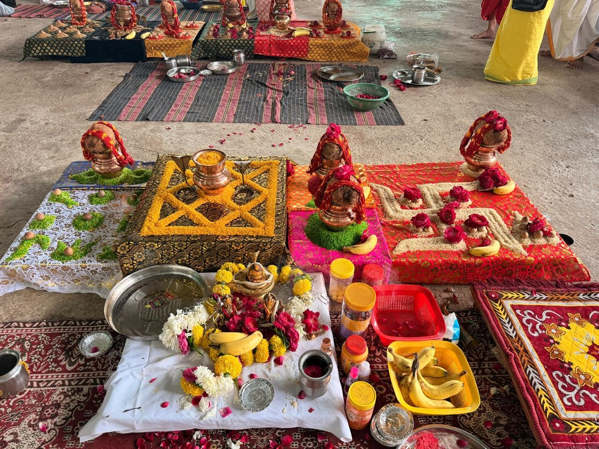
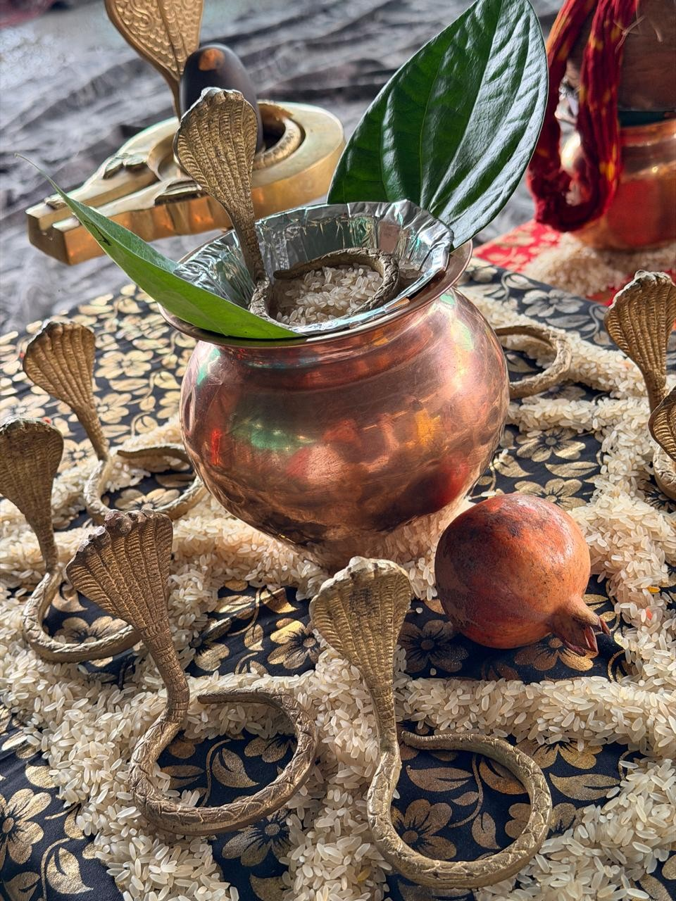
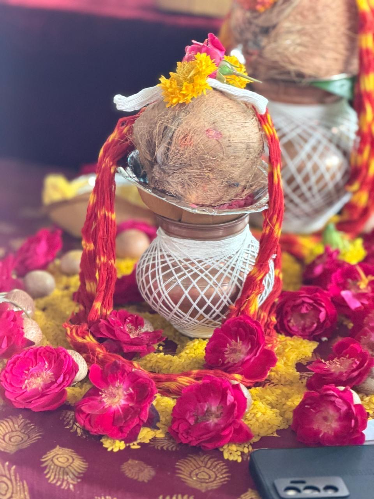
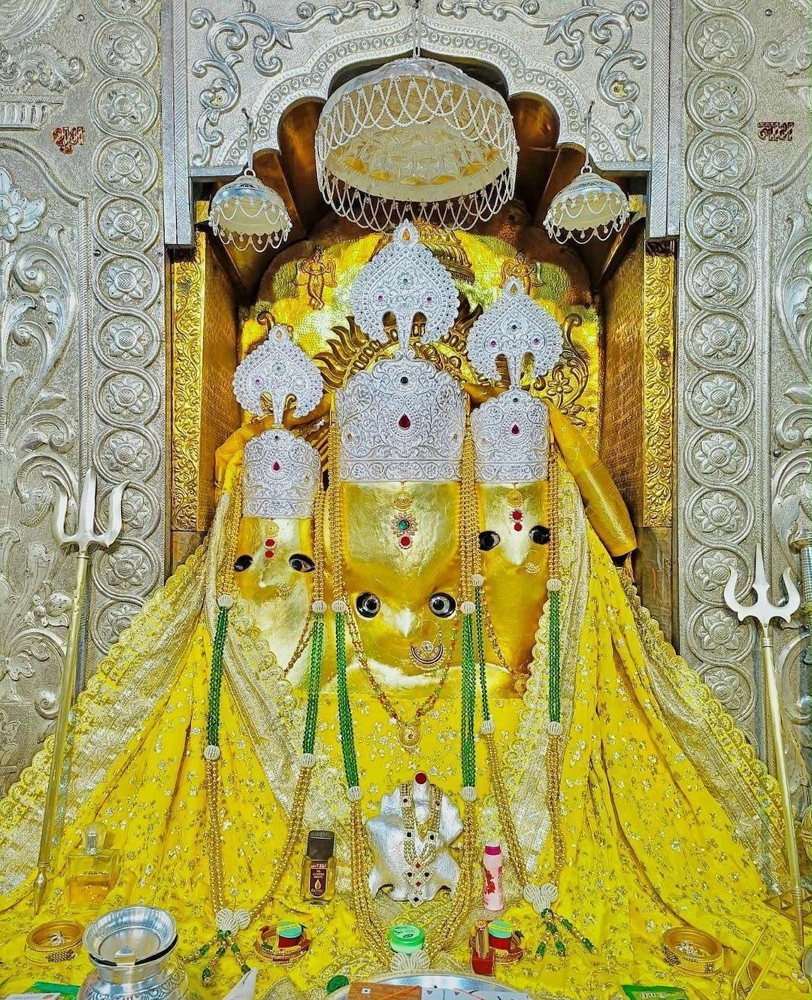
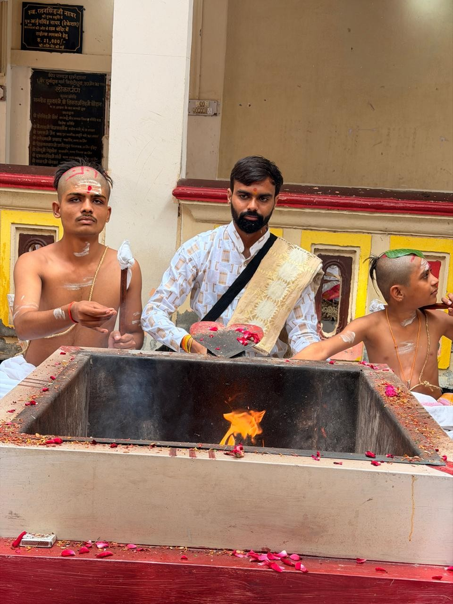
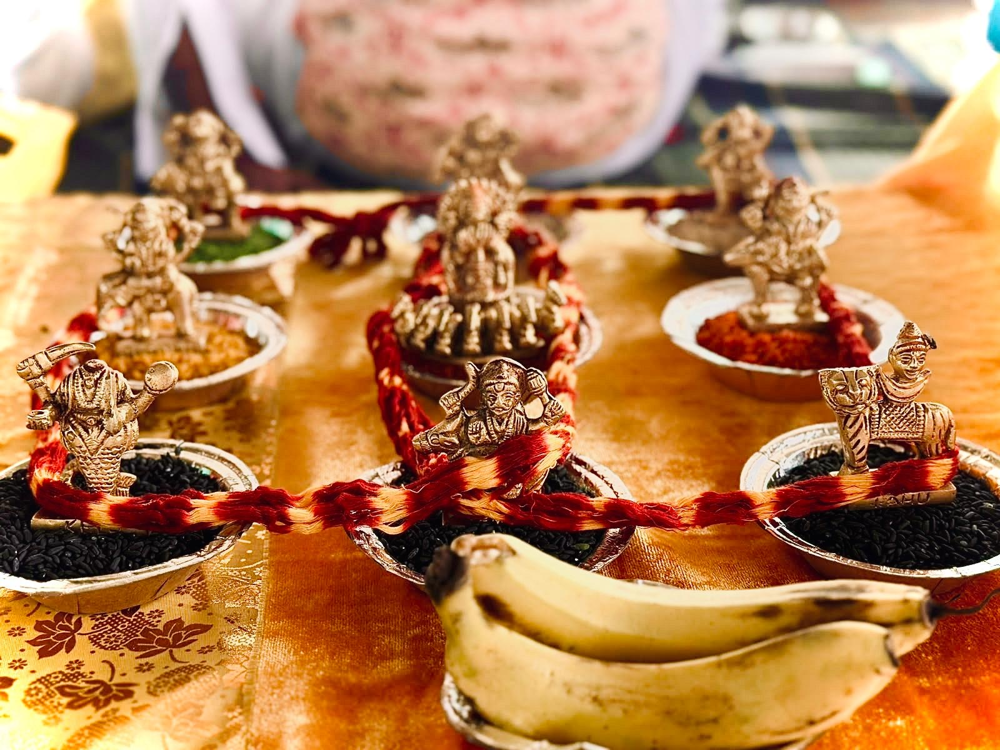
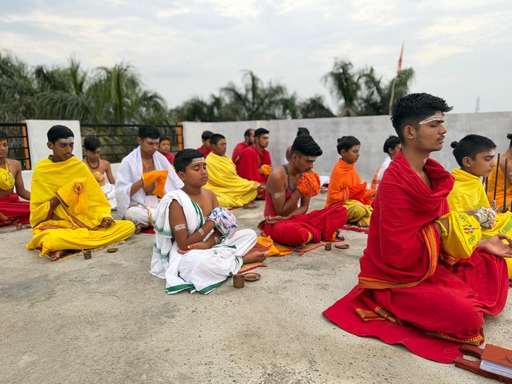
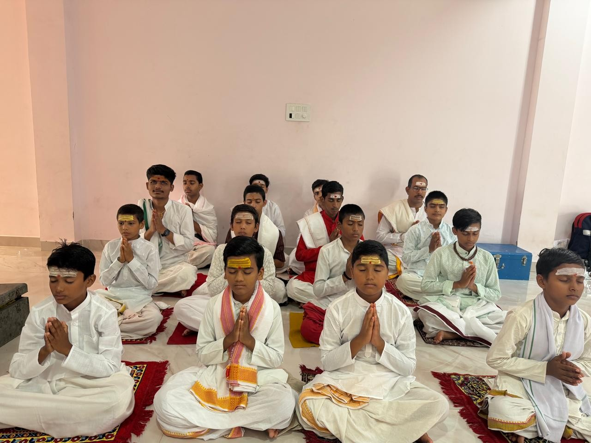
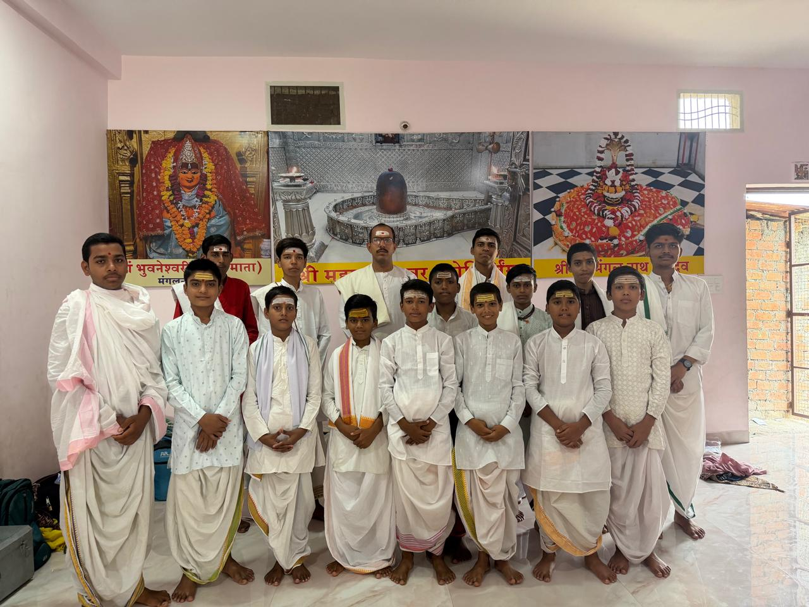
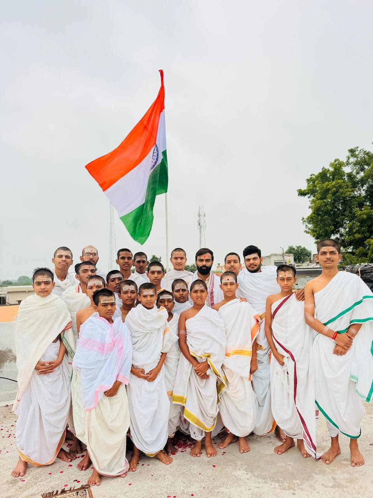

01
मंगल दोष पूजा
मंगल दोष पूजा की विधि, आवश्यक सामग्री और आयोजन संबंधी जानकारी प्राप्त करें।
पूजा की जानकारी लें ↗वेदमूर्ति अनिल शास्त्री जी से विभिन्न वैदिक पूजन एवं अनुष्ठानों की जानकारी और बुकिंग के लिए संपर्क करें।
अपनी आवश्यकता के अनुसार पूजा की जानकारी और बुकिंग के लिए सेवा चुनें।

मंगल दोष पूजा की विधि, आवश्यक सामग्री और आयोजन संबंधी जानकारी प्राप्त करें।
पूजा की जानकारी लें ↗
कालसर्प दोष पूजा के आयोजन और उपलब्ध तिथियों के लिए संपर्क करें।
पूजा की जानकारी लें ↗
परंपरा और विधि के अनुसार अर्क एवं कुंभ विवाह संबंधी जानकारी प्राप्त करें।
पूजा की जानकारी लें ↗

महामृत्युंजय जप एवं अनुष्ठान की अवधि और विधि के बारे में पूछें।
पूजा की जानकारी लें ↗
नवग्रह शांति पूजन की विधि और आयोजन संबंधी जानकारी प्राप्त करें।
पूजा की जानकारी लें ↗
पितृ पूजा एवं संबंधित धार्मिक विधियों की जानकारी के लिए संपर्क करें।
पूजा की जानकारी लें ↗
उज्जैन की पावन धार्मिक परंपराओं से जुड़ी पूजा-पाठ और वैदिक अनुष्ठानों की जानकारी के लिए गुरुजी से संपर्क करें। हर पूजा की विधि, तिथि, सामग्री और आयोजन से जुड़ी बातों की पुष्टि सीधे की जा सकती है।
“श्रद्धा और परंपरा के साथ वैदिक संस्कारों का सम्मान।”
गुरुजी से संपर्क करें ↗वेद अध्ययन, मंत्रोच्चार और पारंपरिक वैदिक शिक्षा से जुड़ी झलकियाँ।

हमारे द्वारा संचालित वेद विद्यालय की गतिविधियों और विद्यार्थियों के अध्ययन की झलकियाँ देखें। विद्यालय के पाठ्यक्रम, प्रवेश और स्थान संबंधी जानकारी के लिए संपर्क करें।
जानकारी प्राप्त करें ↗


पूजा-पाठ और धार्मिक गतिविधियों की वास्तविक तस्वीरें।

पूजा की तिथि, विधि, सामग्री और बुकिंग के लिए गुरुजी से सीधे संपर्क करें।